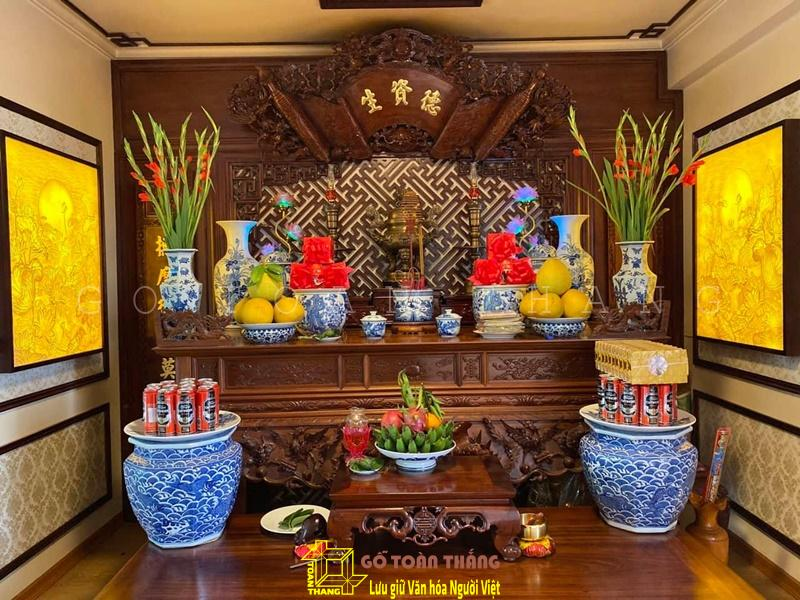
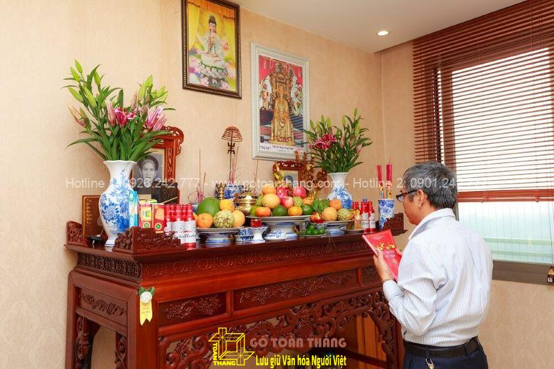
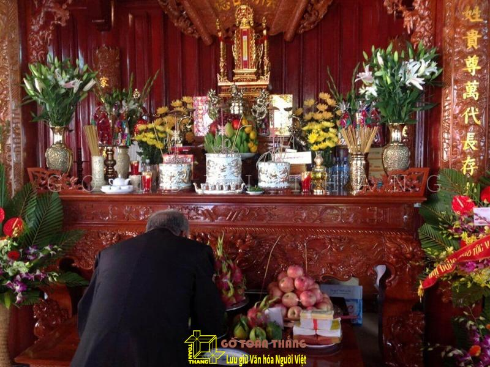
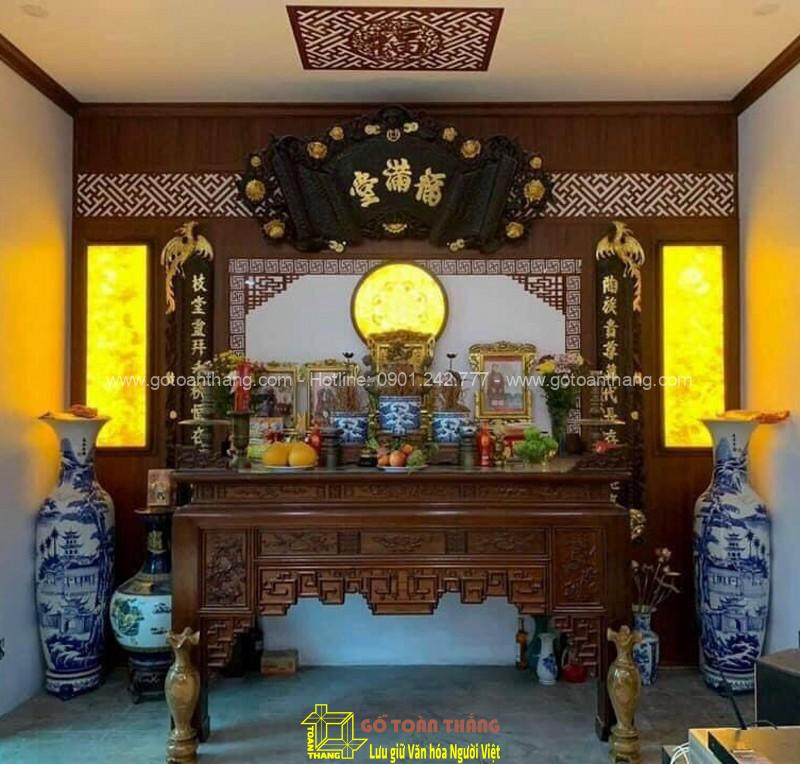
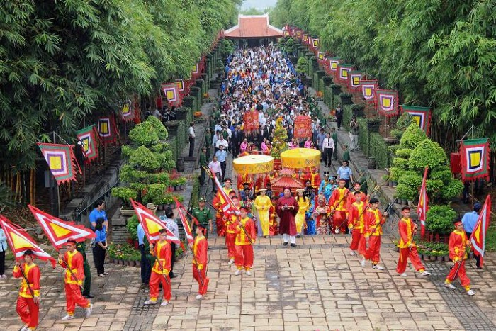
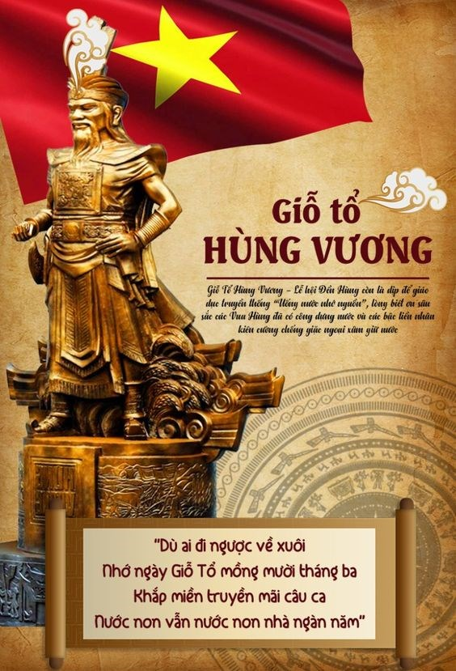

Thuyết Trình Tổ 1
Chào Mừng Cô Và Các Bạn Đến Với Bài Thuyết Trình Nhóm Em
Thờ Cúng Tổ Tiên
Nguồn gốc

Phong tục thờ cúng tổ tiên bắt nguồn từ niềm tin cho rằng linh hồn của người đã khuất vẫn còn hiện hữu trong thế giới này và ảnh hưởng đến đời sống của con cháu.[6] Người Việt cho rằng chết chưa phải là hết, tuy thể xác tiêu tan nhưng linh hồn bất diệt và thường ngự trên bàn thờ để gần gũi, giúp đỡ con cháu, dõi theo những người thân để phù hộ họ khi nguy khó, mừng khi họ gặp may mắn, khuyến khích họ làm những điều lành và cũng quở phạt khi họ làm những điều tội lỗi,[4] do đó cũng ảnh hưởng đến hành động và cách cư xử của những người còn sống trong gia đình, họ thường tránh làm những việc xấu vì sợ vong hồn cha mẹ buồn, đôi khi muốn quyết định việc gì đó cũng phải cân nhắc xem liệu khi còn sinh tiền thì cha mẹ có đồng ý như thế hay không.[7] Họ cũng tin rằng dương sao thì âm vậy, khi sống cần những gì thì chết cũng cần những thứ ấy, cho nên dẫn đến tục thờ cúng,[8] với quan niệm thế giới vô hình và hữu hình luôn có sự quan hệ liên lạc với nhau và sự thờ cúng chính là môi trường trung gian để 2 thế giới này gặp gỡ.
Biểu hiện
hình thức thờ cúng tổ tiên còn là biểu hiện của lòng hiếu thảo và nhớ đến công ơn sinh thành dưỡng dục của tiền nhân, nhớ đến cội nguồn của mình, đồng thời cũng là nền tảng cơ sở cho quan hệ gia đình.[10] Trong nhóm Kitô giáo thì người Công giáo Việt Nam vẫn có lập nơi tưởng nhớ tổ tiên (tạm gọi là bàn thờ)[11] với những nghi thức theo truyền thống dân tộc, nhưng họ không xem đó là hình thức tôn thờ mà là tôn kính; trái lại, nhiều người Tin Lành không làm như vậy mà họ chỉ treo di ảnh tưởng nhớ.
Các bước thực hiện nghi lễ
Trên thực tế, nghi thức thờ cúng tổ tiên là lời chỉ dạy truyền miệng từ đời này sang đời khác. Trong đó, nguyên tắc cúng – khấn – vái – lạy là các nghi thức cơ bản bắt buộc trong thờ cúng:

Nghi thức cúng
Cúng là phần nghi lễ chuẩn bị lễ vật, thắp hương, đốt đèn trên bàn thờ gia tiên. Lễ cúng thường sẽ được thực hiện trong ngày mùng 1, ngày rằm, ngày giỗ, ngày Tết….
Nghi thức khấn
Khấn là phần nghi lễ để con cháu tấu lên những điều muốn cầu xin với tổ tiên. Trong phần khấn, gia chủ cần xưng tên, ngày tháng làm lễ, nơi làm lễ, mục đích của buổi lễ, những điều cần tấu, cần xin. Gia chủ có thể khấn theo bài hoặc đơn giản là nghĩ gì tấu đó. Quan trọng nhất ở nghi thức khấn là lòng thành kính, là sự nhất tâm cầu.
Khấn là để con cháu tấu lên những điều muốn cầu xin với tổ tiên
Khấn là để con cháu tấu lên những điều muốn cầu xin với tổ tiên
Nghi thức vái
Sau khi khấn những điều cần tấu lên với gia tiên, gia chủ sẽ phải vái. Vái là thao tác đưa hai tay lên chắp trước ngực. Tiếp theo, bạn đưa tay chắp lên ngang đầu, đồng thời đầu hơi cúi và khom lưng. Cuối cùng, bạn ngẩng đầu lên. Như vậy, một thao tác vái được hoàn thành.
Nghi thức lạy
Vái và lạy là nghi thức thờ cúng tổ tiên đi cùng với nhau. Nghi thức này là để bày tỏ lòng tôn kính với tổ tiên, người thân quá cố. Tùy vào từng lễ cúng, gia chủ có thể lạy 2 lạy, 3 lạy, 4 lạy hoặc 5 lạy. Ý nghĩa cụ thể của từng trường hợp là:
2 vái và 2 lạy: Áp dụng trong trường hợp phúng điều người mất là vai dưới như: em, con cháu… 2 vái còn được sử dụng trong trường hợp là con cháu thể hiện lòng hiếu kính với người sống là bề trên trong các dịp đặc biệt.>
3 vái và 3 lạy: Áp dụng trong trường hợp lễ Phật. 3 vái 3 lạy này là tượng trưng của Phật – Pháp – Tăng. Phật là giác ngộ mọi lẽ, Pháp là chính đáng, không tà ngụy. Tăng là thanh tịnh, không nhơ bẩn.
4 vái và 4 lạy: Vái lạy khi cúng lễ người thân quá cố và thánh thần, thần linh.
5 vái và 5 lạy: Nghi thức này để lạy Vua 5 lạy trong lễ giỗ tổ Hùng Vương.

Ý nghĩa
So với những tín ngưỡng khác, nghi thức thờ cúng tổ tiên khá bình dị và không mang tính chất cực đoan. Việc thờ cúng tổ tiên là sự thế tục, là nếp sống đã ăn sâu vào tiềm thức của người Việt.
Thờ cúng tổ tiên là cách để con cháu thể hiện sự hiếu kính với ông bà, tổ tiên. Thêm vào đó, việc này cũng là cách để các thế hệ trước giáo dục truyền thống cho thế hệ sau. Đây cũng chính là ý nghĩa quan trọng nhất của việc thờ cúng là đạo lý “Uống nước nhớ nguồn’’.
Khi thờ cúng, con cháu sẽ cầu xin tổ tiên phù trợ, che chở để nhận được bình yên, an nhiên trong cuộc sống. Tuy việc cầu xin này chưa thể khẳng định có hiệu quả hay không nhưng ý nghĩa thờ cúng gia tiên mang đến giá trị tinh thần là vô cùng to lớn. Về mặt tâm linh, con cháu sẽ cảm thấy thanh thản và có chỗ dựa tinh thần vững chắc.
Thờ cúng tổ tiên là để thể hiện lòng thành kính của con cháu
Thờ cúng tổ tiên là để thể hiện lòng thành kính của con cháu
Theo quan niệm của người Việt, người mất sẽ đi đến một cõi khác. Với việc thờ cúng, con cháu sẽ luôn cảm thấy sự hiện hữu của các linh hồn người thân đã khuất ở bên cạnh. Tổ tiên được thờ cúng cũng sẽ không trở thành ma đói, quỷ đói. Thay vào đó, gia tiên sẽ mách bảo và phù trợ cho con cháu có được cuộc sống thuận hòa, an nhiên.

Thờ Quốc Tổ Hùng Vương
Nguồn gốc
Tín ngưỡng thờ cúng Hùng Vương bắt nguồn từ Tín ngưỡng thờ cúng tổ tiên, một trong những tín ngưỡng đặc thù, có vị trí hết sức đặc biệt trong đời sống tinh thần và là một trong những thành tố tạo nên bản sắc văn hóa độc đáo của cộng đồng các dân tộc Việt Nam. Trải qua bao biến cố của lịch sử, Tín ngưỡng thờ cúng tổ tiên của dân tộc Việt Nam luôn chiếm vị trí thiêng liêng trong đời sống tinh thần của cộng đồng các dân tộc; được bảo tồn và lưu truyền qua bao nhiêu thế hệ với sức sống lâu bền và ngày một lan tỏa mạnh mẽ trong cộng đồng xã hội và tồn tại qua mọi thể chế chính trị.

Tín ngưỡng thờ cúng Hùng Vương là biểu hiện cao nhất của Tín ngưỡng thờ cúng tổ tiên, thể hiện bản sắc văn hóa đặc trưng của cộng đồng người Việt Nam, đó là lòng biết ơn đối với Hùng Vương và các bậc tiền nhân đã có công dựng nước. Trong tâm thức của người Việt, Hùng Vương là vị thủy tổ khai sinh ra dân tộc Việt. Với lòng tôn kính, biết ơn Vua Hùng, cộng đồng người Việt đã tự nguyện thờ cúng Hùng Vương, đưa việc thờ cúng Hùng Vường trở thành tín ngưỡng, là biểu tượng văn hóa tạo nên truyền thống đoàn kết, yêu thương, đùm bọc và cùng vượt qua mọi khó khăn thử thách để xây dựng và bảo vệ Tổ quốc.
Biểu hiện
Biểu hiện của Quốc Tổ Hùng Vương được thể hiện qua nhiều khía cạnh trong văn hóa, tín ngưỡng và đời sống của người dân Việt Nam. Dưới đây là một số biểu hiện tiêu biểu:

1. Lễ hội Đền Hùng: Hằng năm, vào ngày 10 tháng 3 Âm lịch, người dân từ khắp nơi đổ về Đền Hùng (Phú Thọ) để tưởng nhớ công lao của các vua Hùng trong việc xây dựng đất nước. Đây là dịp để người dân thể hiện lòng tôn kính đối với Quốc Tổ và ghi nhớ cội nguồn.
2. Tín ngưỡng thờ cúng Hùng Vương: Người Việt Nam tin rằng các Vua Hùng là tổ tiên chung của dân tộc, là người đã khai sinh và tạo dựng đất nước. Tín ngưỡng này được thể hiện qua các lễ cúng, nghi thức trang trọng tại các đền thờ Vua Hùng ở khắp nơi trên cả nước, đặc biệt là tại Phú Thọ – nơi được coi là đất tổ.
3. Biểu tượng trong văn học, nghệ thuật: Hình ảnh các Vua Hùng thường được tái hiện trong các tác phẩm văn học, hội họa, điêu khắc, và các tác phẩm nghệ thuật khác, với những câu chuyện huyền thoại như Sơn Tinh - Thủy Tinh, truyền thuyết về bánh chưng, bánh giầy.
4. Giáo dục về cội nguồn và truyền thống dân tộc: Trong hệ thống giáo dục Việt Nam, từ nhỏ, học sinh đã được dạy về sự tích Hùng Vương và truyền thống dựng nước của các vua Hùng, giúp củng cố lòng yêu nước và tự hào dân tộc.
5. Ý nghĩa trong tâm linh và đời sống: Việc tôn kính Quốc Tổ Hùng Vương không chỉ thể hiện ở hình thức thờ cúng mà còn là biểu tượng cho tinh thần đoàn kết và sức mạnh của dân tộc Việt Nam. Quốc Tổ là nguồn cội chung, là biểu tượng linh thiêng, gắn kết mọi người Việt với nhau, bất kể họ ở đâu trên thế giới.
Những biểu hiện này là minh chứng cho sự trường tồn của tín ngưỡng Hùng Vương trong văn hóa và tâm hồn người Việt, khẳng định giá trị văn hóa đặc sắc và bản sắc dân tộc của Việt Nam.
Các bước thực hiện nghi lễ
1. Chuẩn Bị Nghi Thức
Lập đàn tế : Đàn tế thường được trang trí béo với cờ, lọc, và các biểu tượng tôn vinh các Vua Hùng.
Chuẩn bị lễ vật : Lễ vật thường bao gồm mâm hoa, hương, đèn đèn, nến, nước, rượu, bánh chưng, bánh dày và các sản phẩm dân gian khác.
Trang phục : Người tham gia lễ tế, cao nhất là các cấp chức sắc hoặc đại diện chính quyền, thường mặc áo dài truyền thống, khăn xếp để thể hiện sự tôn kính.
2. Rước Kiệu
Nghi lễ rước kiệu : Đoàn rước kiệu sẽ chuyển từ nơi tổ chức ra đến nơi thờ cúng chính. Kiệu thường được trang trí theo kỳ kỳ và được đội rước bao gồm những trang phục mặc định.
Nghi thức chuyển chuyển : Đoàn rước kiệu chuyển một cách trang nghiêm và trật tự, đôi khi có thêm các phần biểu tượng truyền thống nghệ thuật, như trống hội, nhã nhạc cung đình.

3. Lễ Dâng Hương
Khai lễ : Người đứng đầu (chủ lễ) thực hiện khai lễ, dâng hương để kính mời các Vua Hùng.
Dâng hương và lễ vật : Các đại diện lần như dâng hương, lễ vật lên bàn thờ để tưởng nhớ công đức của Quốc Tổ Hùng Vương và cầu nguyện cho quốc thái dân an.
Lễ đọc chúc văn : Chúc văn là bài văn đọc để ca ngợi và ghi công đức của các Vua Hùng, xin hiện lòng biết ơn của con cháu đối với tổ tiên.
4. Lễ Tế
Nghi lễ tế lễ : Nghi thức tế bao gồm các hoạt động hành lễ trang nghiêm, từ dâng hương, khấn bái đến lễ chào mừng ba lạy hoặc năm lạy.
Lễ âm nhạc : Đội nhạc lễ cử hành các bài nhạc truyền thống trong suốt quá trình lễ hội, nhằm tôn vinh thêm phần trang trọng cho nghi lễ.
5. Lễ Tạ Ơn và Kết Thúc
Lễ tạ : Sau khi hoàn thành các nghi thức, lễ chủ lễ thực hiện lễ tạ, dâng hương và tạ ơn các Vua Hùng.
Phần hội : Sau lễ tế là thành phần hội với các hoạt động văn hóa, nghệ thuật như hát xoan, múa rối, chơi trò chơi dân gian cho người dân cùng tham gia vui chơi, tưởng nhớ các Vua Hùng.
Ý nghĩa
Quốc tổ Hùng Vương là biểu tượng linh thiêng trong lịch sử và văn hóa Việt Nam, mang ý nghĩa sâu sắc về tinh thần đoàn kết, lòng biết ơn tổ tiên, và ý thức dân tộc.
1.Tinh thần đoàn kết và tự hào dân tộc**: Tín ngưỡng thờ cúng Hùng Vương gắn liền với câu chuyện về nguồn gốc dân tộc Việt, nhấn mạnh sự đoàn kết của các cộng đồng người Việt từ thời sơ khai. Lễ Giỗ Tổ Hùng Vương, tổ chức vào ngày mùng 10 tháng 3 âm lịch hằng năm, là dịp để người dân Việt Nam cùng nhau tưởng nhớ cội nguồn, thể hiện lòng tự hào và tinh thần đoàn kết dân tộc.
2. Biểu tượng của quyền lực và lãnh đạo**: Hùng Vương là vị vua đầu tiên khai sinh ra nước Văn Lang, nhà nước đầu tiên của người Việt, đặt nền móng cho văn hóa, xã hội và lãnh thổ Việt Nam. Qua đó, Quốc tổ Hùng Vương được xem như biểu tượng của quyền lực và tinh thần lãnh đạo kiên cường.
3. Giáo dục về lòng biết ơn và truyền thống uống nước nhớ nguồn**: Việc thờ cúng Quốc tổ Hùng Vương là một cách nhắc nhở con cháu Việt Nam về lòng biết ơn đối với công ơn dựng nước và giữ nước của tổ tiên. Đây là truyền thống uống nước nhớ nguồn, một phẩm chất tốt đẹp trong văn hóa Việt Nam.
4. Sự bảo hộ và phù hộ của tổ tiên**: Trong tín ngưỡng dân gian, Hùng Vương được xem là vị thần bảo hộ cho quốc gia và dân tộc, mang lại sự an lành, thịnh vượng, và bảo vệ đất nước trước những biến cố.
Với ý nghĩa quan trọng này, tín ngưỡng thờ Quốc tổ Hùng Vương không chỉ là một phần của văn hóa truyền thống mà còn là niềm tự hào và động lực tinh thần cho người dân Việt Nam.
Thờ Mẫu
Nguồn gốc

Đền Mẫu bắt nguồn từ tín ngưỡng đa thần giáo, trong đó tôn thờ các vị thần tự nhiên như núi, sông, biển và đất đai. Theo thời gian, người Việt hình thành hệ thống thờ cúng các vị thần nữ, đặc biệt là Mẫu – đại diện cho quyền năng bảo vệ, che tuyết và ban lành.
Tín ngưỡng thờ Mẫu được phát triển mạnh mẽ từ thời Lý - Trần, với sự xuất hiện của các thần thờ Thánh Mẫu, như Mẫu Liễu Hạnh – một trong Tứ Bất Tử của Việt Nam
Biểu hiện
Ngã Mẫu hiện diện qua các ngôi đền, phủ, miếu thờ khắp các vùng miền Việt Nam. Mỗi vị Mẫu thường được gắn liền với các chất yếu tố tự nhiên cụ thể như Mẫu Thoải (nước), Mẫu Thượng Ngàn (rừng núi), và Mẫu Địa (đất).
Các buổi lễ hầu đồng, hầu bóng – nơi người tín đồ nhập hồn, mô phỏng các nhân vật thần linh trong tín ngưỡng, biểu đạt qua lời ca, điệu múa và trang phục màu sắc tượng trưng cho mỗi vị Mẫu.
Các bước thực hiện nghi lễ
Lễ hầu đồng : Là nghi thức quan trọng nhất trong thờ Mẫu, người tín đồ hoặc thầy cúng sẽ nhập hồn để diễn tả các vị thần linh qua lời ca, múa múa. Mỗi giá hầu đồng có thể thực hiện một thần linh khác nhau và có các trang phục cùng đồ lễ tương ứng.
Cúng Mẫu : Hàng năm vào các dịp lễ hội lớn như Tết Nguyên Đán, ngày rằm, người dân thường dâng lễ vật để cúng bái, cầu mong sức khỏe, bình an và may mắn.
Lễ hội thờ Mẫu : Một số lễ hội lớn được tổ chức hàng năm tại các đền thờ thần tượng như Phủ Dầy (Nam Định), Đền Sông Sơn (Thanh Hóa), và Phủ Tây Hồ (Hà Nội), thu hút đông đảo người dân tham gia.

Ý nghĩa
Tôn vinh sức mạnh của người phụ nữ : Tín ngưỡng thờ Mẫu tôn vinh vai trò và sức mạnh của người phụ nữ trong cuộc sống và văn hóa Việt Nam.
Sự gắn kết giữa con người và thiên nhiên : Qua thờ Mẫu, người Việt bày tỏ lòng biết ơn và tôn kính với các yếu tố thiên nhiên, từ đó hình thành ý thức bảo vệ môi trường.
Giá trị tâm linh : Tín ngưỡng thờ Mẫu lại niềm tin vào sự giả của các vị thần, tạo niềm tin an ủi, giúp con người vượt qua khó khăn trong cuộc sống.

Thờ Anh Hùng Dân Tộc
Nguồn gốc

Việc thờ cúng các anh hùng dân tộc ở Việt Nam lấy nguồn từ lịch sử tranh chống ngoại xâm, giành lại độc lập và bảo vệ nền văn hóa dân tộc. Những anh hùng có công lớn với đất nước, bao gồm các vị vua, tướng lãnh, và những người có công bảo vệ dân tộc, thường được nhân dân tôn kính và thờ cúng như một biểu tượng của lòng yêu nước và sự biết ơn .
Biểu hiện
Người dân xây dựng đền thờ, miếu thờ các anh hùng dân tộc, nơi đây trở thành địa điểm sinh hoạt văn hóa, tâm linh cộng đồng.
Các ngày giỗ, ngày lễ kỷ niệm chiến công, dân dân thường được tổ chức lễ dâng hương, lễ vật tôn sùng vinh quang và tri ân.
Các lễ hội truyền thống, tái hiện lịch sử, các cuộc thi đấu võ thuật hay các trò chơi dân gian cũng thường được tổ chức gắn kết với các thánh tích, truyền thuyết về các vị anh hùng.

Các bước thực hiện nghi lễ
Lễ dâng hương : Dân dân thường dâng hiến hương và hoa quả để tỏ lòng thành kính.
Lễ tế : Bao gồm các nghi thức như đọc văn tế, thánh lễ vật (gồm trầu cau, rượu, thịt, bánh trái, vv).
Hội làng : Tổ chức những nghi lễ và hoạt động cộng đồng nhằm tưởng nhớ công lao, đồng thời gắn kết mọi người trong cộng đồng.
Cầu nguyện : Người dân thường cầu nguyện sự che trượt, bình an và may mắn cho bản thân và gia đình.
Ý nghĩa
Giáo dục truyền thống yêu nước : Thờ cúng các anh hùng dân tộc giúp giáo dục thế hệ trẻ về lòng yêu nước, tinh thần dân tộc, và sự hy sinh vì đất nước.
Gắn kết cộng đồng : Các lễ hội, nghi lễ gắn liền với tín hiệu này giúp củng cố tinh thần đoàn kết cộng đồng.
Phát huy giá trị văn hóa truyền thống : Thờ cúng anh hùng dân tộc giúp bảo tồn và phát huy những giá trị văn hóa, đạo đức, nhân văn đặc trưng của dân tộc Việt Nam.
Việc thờ cúng anh hùng dân tộc không chỉ là tín hiệu mà còn là văn hóa đẹp đẽ của người Việt, gắn liền với tâm thức hướng dẫn về nguồn cội và ghi nhớ công lao của thế hệ đi trước.

Thờ Thành Hoàng
Nguồn gốc

Bắt nguồn từ tín ngưỡng dân gian Việt Nam, xuất phát từ mong muốn có một vị thần bảo hộ cho làng quê. "Thành Hoàng" là một danh thắng để chỉ vị trí thần bảo vệ cho một làng, xã hoặc một vùng đất, thường là người có công với làng, hay là một vị thần triều đình phong sắc. Tín ngưỡng này gắn liền với nền văn hóa lúa nước, khi dân dân muốn nhờ thần linh bảo hộ yên tĩnh và đem lại bình an.
Biểu hiện
Làng nào cũng có đình thờ Thành Hoàng, đây là nơi tổ chức các nghi lễ cúng tế, hội làng.
Mỗi dịp lễ hội làng, dân tổ chức lễ rước Thành Hoàng, có múa hát dân gian, có thể tế lễ tôn kính và cầu nguyện cho sự giúp đỡ của ngài.
Ngã Thành Hoàng thường diễn ra trong những dịp lễ hội lớn như Tết Nguyên đán, ngày kỵ Thành Hoàng, những dịp mưa thuận gió hòa để tạ ơn thần linh.
Các bước thực hiện nghi lễ
Lễ cầu an: Cầu nguyện bình an cho cả làng.
Lễ hội làng: Thường tổ chức ở đầu xuân, bao gồm các hoạt động văn hóa dân gian như múa hát, rước kiệu Thành Hoàng.
Lễ cầu mưa: Nếu hạn hán, dân làng cầu mưa để mùa phát triển.
Lễ tạ ơn: Khi mùa bão bội thu, dân làng làm lễ để tạ ơn Thành Hoàng.
Nghi thức lễ bao gồm dâng hương, rượu, xôi, thịt và có thể có nghi thức chào kiệu và màn múa hát.

Ý nghĩa
Bảo vệ và che chở: Thành Hoàng được xem như thần bảo hộ, bảo vệ làng trước thiên tai, dịch bệnh, và giúp dân làng sống an lành.
Kết nối cộng đồng: Tín hiệu thờ cúng Thành Hoàng giúp tạo ra sự gắn kết cộng đồng, khi cả làng cùng tham gia các lễ hội, thể hiện tinh thần kết nối.
Giữ móng truyền thống văn hoá: Lễ hội và nghi lễ thờ cúng Thành Hoàng là nét văn hoá đặc sắc, giúp bảo tồn truyền thống, đồng thời là dịp để con cháu hiểu về nguồn gốc và phong tục làng xã.
Tóm tắt lại, thờ Thành Hoàng là một tín ngưỡng lâu đời, mang đậm bản sắc dân tộc và góp phần vào việc giữ, phát huy văn hóa truyền thống Việt Nam.